Leer zweefvliegen bij KAZM
Als lid volg je de opleiding tot brevet (SPL) met clubinstructeurs, vlieg je elk weekend mee en hoor je bij de ploeg. Instromen kan het hele seizoen.
Lidmaatschap: [PRIJS]/jaar
Word lid →Vliegveld Oostmalle-Zoersel · EBZR
Een van de drie grootste zweefvliegclubs van Vlaanderen. Elk weekend van begin maart tot eind oktober, en telkens als het weer het toelaat, vliegen we vanuit Oostmalle.
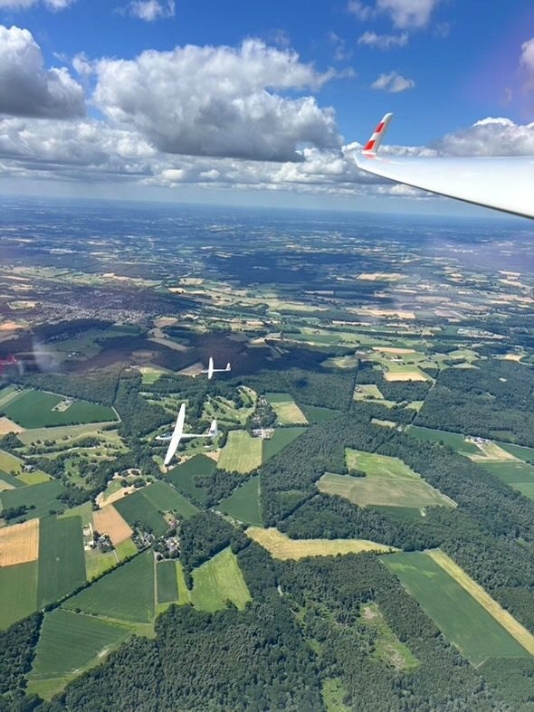
Als lid volg je de opleiding tot brevet (SPL) met clubinstructeurs, vlieg je elk weekend mee en hoor je bij de ploeg. Instromen kan het hele seizoen.
Lidmaatschap: [PRIJS]/jaar
Word lid →Een of twee weken elke dag vliegen, met dagelijkse briefing. Vanaf 14 jaar.
€650 / week · €1.200 / 2 weken, incl. jaarlidmaatschap
Inschrijvingen starten in 2027.
Alles over het kamp →Twijfel je nog? Vlieg eens mee met een instructeur in een tweezitter en ervaar hoe het voelt om op thermiek te klimmen.
[PRIJS] per vlucht
Vlucht aanvragen →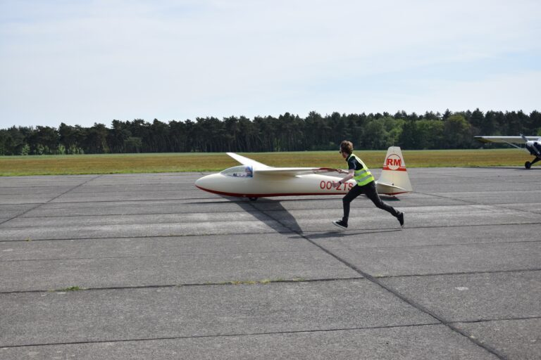
Een zweefvliegtuig vliegt zoals elk ander vliegtuig, maar zonder motor. Een sleepvliegtuig trekt ons naar 500 meter; daar lossen we de kabel en zoeken we thermiek. Daarmee duurt een vlucht soms 6 à 7 uur en leggen we honderden kilometers af.
Het is ook een teamsport: iemand sleept, iemand haakt aan, iemand loopt aan de vleugel mee. Toestellen halen we samen van de piste. Zo ontstaan er op het veld sterke vriendschappen.
Lees hoe de opleiding werkt →De opleiding
Je leert vliegen in de club, met vrijwillige instructeurs, op de vliegdagen in het weekend. Zo verloopt het van je eerste vlucht tot je brevet.
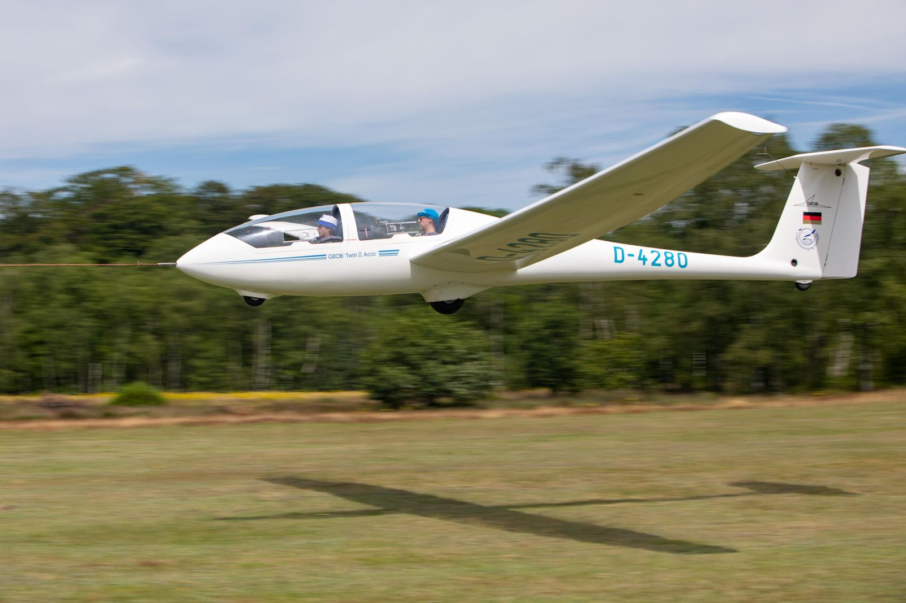
Je wordt lid van KAZM en van de Liga van Vlaamse Zweefvliegclubs (LVZC). Daarin zit onder meer je sportverzekering.
Theorie is niet nodig om te beginnen. Na een veiligheidsbriefing vlieg je met een instructeur in een tweezitter: rechtuit, bochten en cirkelen in thermiek. Je instructeur houdt je vorderingen bij in je opleidingsboekje.
Bij een erkende luchtvaartarts (AME). Die heb je pas nodig vóór je eerste solovlucht. Bril of lenzen zijn geen probleem.
Na ongeveer 30 tot 50 lesvluchten zegt je instructeur: nu doe je het alleen. Daarna wissel je solovluchten af met vluchten samen met een instructeur.
In de winter volg je een theoriecursus van enkele maanden. Het examen leg je af bij het Directoraat-generaal Luchtvaart; een geslaagd examen blijft 24 maanden geldig.
Je maakt een overlandvlucht: 50 km alleen, of 100 km met een instructeur in een tweezitter. Daarna volgt het praktijkexamen bij een examinator, en heb je je brevet (SPL).
Met je brevet mag je passagiers meenemen. Daarna kun je verder met FAI-brevetten, wedstrijden, bergvliegen of aerobatiek.
Word lid en start →Bron: Liga van Vlaamse Zweefvliegclubs, zweefvliegen.be. De tarieven van KAZM vind je bij [LINK TARIEVEN].
Minder dan je denkt. Bij KAZM hanteren we democratische prijzen, en dat kan omdat heel veel vrijwillig gebeurt.
Je betaalt per start een democratische prijs. Zo blijft vliegen voor iedereen haalbaar.
Onze instructeurs doen het uit liefhebberij en vragen er niets voor. Voor je lessen betaal je dus geen instructeur.
Alles draait op vrijwilligers: sleeppiloten, instructeurs, wie de kabel aanhaakt of de vleugel vasthoudt. Dat houdt de kosten laag, en dat is de kern van zweefvliegen.
Benieuwd naar de tarieven? Bekijk [LINK TARIEVEN] of stel je vraag.
Zweefkamp in juli
Elke dag vliegen op het vliegveld Oostmalle-Zoersel: de snelste manier om de basis van het zweefvliegen te leren, of als leerling-piloot een grote stap vooruit te zetten.
€650 / week · €1.200 / 2 weken, incl. jaarlidmaatschap (prijzen 2025)
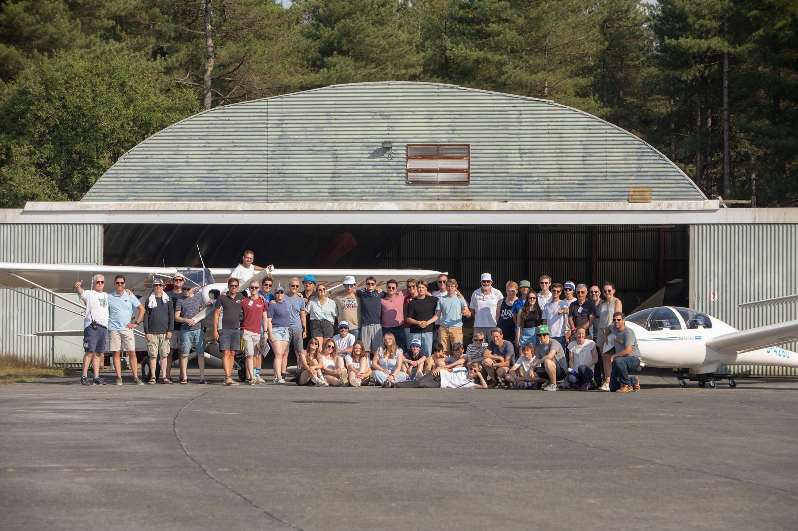
Twee weken in juli, op weekdagen. In het weekend loopt de gewone clubwerking door. Data 2027: [DATA].
Iedereen vanaf 14 jaar: nieuwkomers die het zweefvliegen willen ontdekken én leerling-piloten van de club. Door de lestoestellen geldt een maximumlengte van 2,00 m en een maximumgewicht van 95 kg.
In groepjes van ongeveer 6 leerlingen per lestoestel, met gekwalificeerde instructeurs. Je groep zorgt voor ‘zijn’ toestel: van buitenzetten ’s ochtends tot wassen en stallen ’s avonds.
Voor lesvluchten met een instructeur heb je geen medische keuring nodig, voor solovluchten wel. Bij je inschrijving word je via de Liga verzekerd.
Ontbijt, middag- en avondmaal met drank zijn inbegrepen. Week 1 sluiten we af met biefstuk-friet, het kamp met een BBQ en live muziek.
Kamperen met tent of caravan bij het clubhuis, met douches en toiletten. Er is altijd een kampverantwoordelijke aanwezig.
De planning schuift mee met het weer, zodat we de beste vliegmomenten benutten zonder iedereen uit te putten.
De plaatsen zijn beperkt: per lestoestel ongeveer 6 leerlingen. Ben je jonger dan 18, dan tekent een ouder of voogd mee. Elke deelnemer ondertekent het kampreglement.
Ook leden die al vliegen zijn welkom tijdens de kampweken.
Inschrijvingen voor 2027 starten in 2027.
Hou me op de hoogte →Tien zweefvliegtuigen en een eigen sleepvliegtuig: van tweezitters voor de opleiding tot eenzitters voor je eerste overlandvluchten.
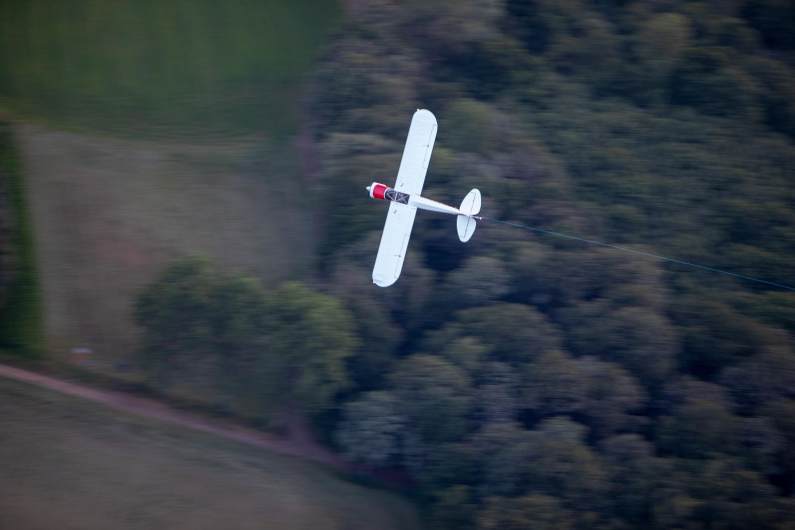
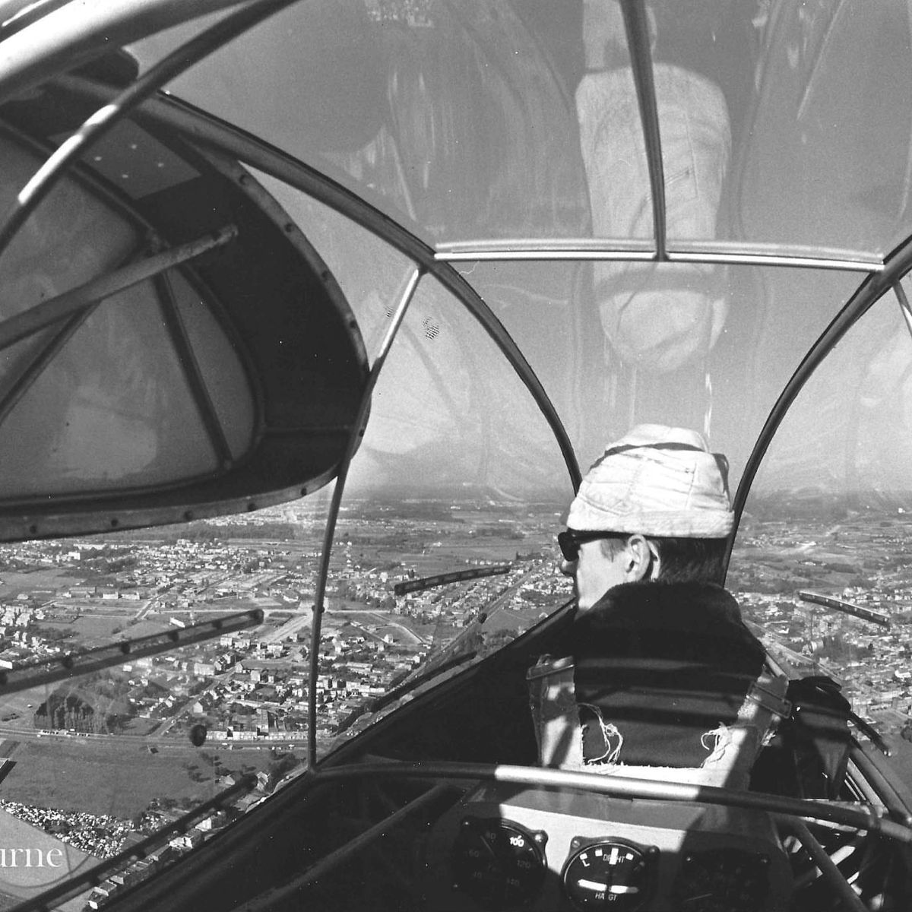
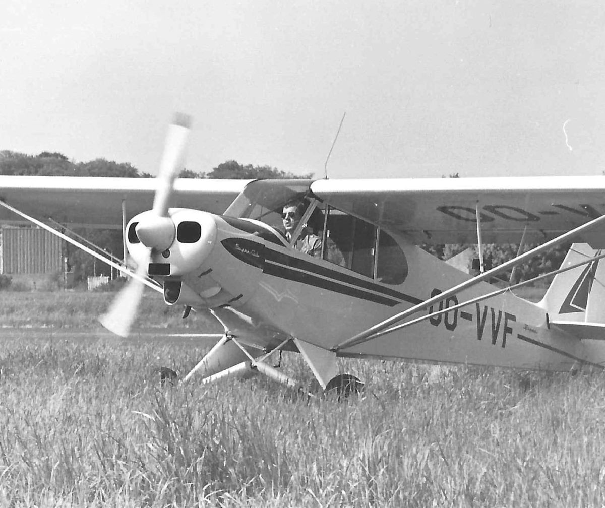
Sleepvliegtuig Piper Super Cub OO-VVFSinds 1936
De Meeuw ontstond uit drie clubs: de Antwerpse Zweefclub Scheldemeeuw, de Antwerpse Jeugdluchtvaartclub en de Vereniging voor Kleine Luchtvaart. Vandaag dragen we een koninklijke titel en behoren we tot de drie grootste zweefvliegclubs van Vlaanderen, met leden van alle leeftijden.
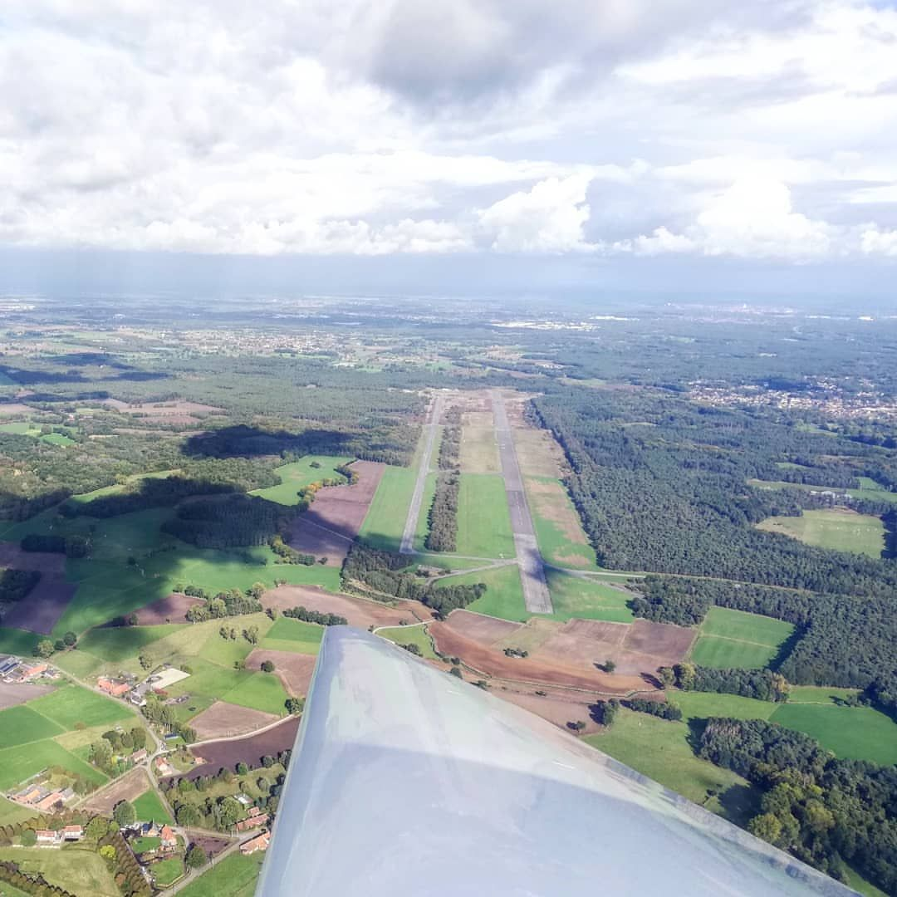
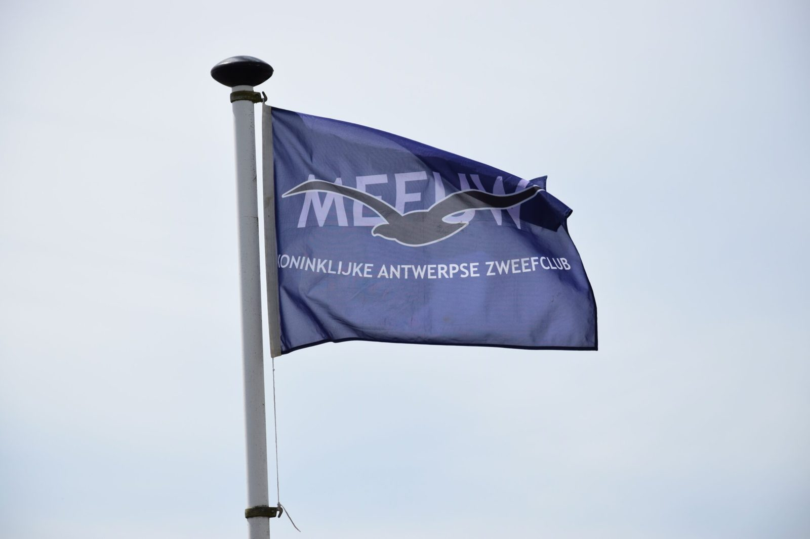
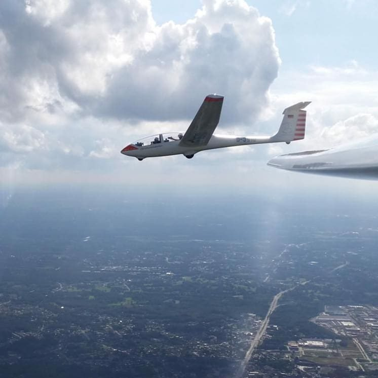
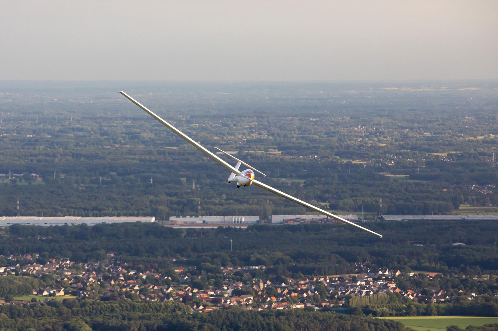
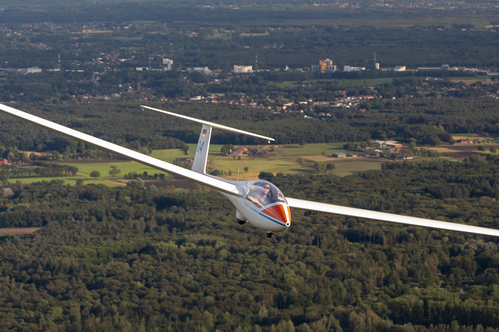
We vliegen in het weekend, op feestdagen en op enkele dagen in de vakantie. Of er gevlogen wordt, beslist het weer.
Seizoen 2026 afgesloten · start seizoen 2027: [DATUM]
| Datum | Activiteit | Status |
|---|---|---|
| [DATUM] | Algemene ledenvergadering | Gepland |
| [DATUM] | Theorie-avond opleiding | Gepland |
| [DATUM] | Eerste vliegdag seizoen 2027 | Afhankelijk van weer |
| [DATUM] | Zweefkamp week 1 en 2 | Inschrijvingen vanaf 2027 |
Wil je lid worden? Kom op een vliegdag kennismaken aan het clubhuis, of laat je gegevens na en we nemen contact op.